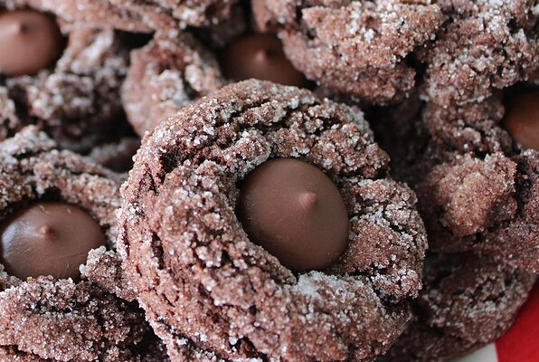

Dark Mocha Crinkles

Chewy dark chocolate mocha goodness!
Who can resist these chewy, chocolatey bad boys?
Ingredients
- 1 cup Butter
- 3/4 cup Brown Sugar
- 1/3 cup white sugar
- 1/4 cup instant coffee powder
- 2 eggs
- 1 teaspoon vanilla extract
- 2 cups all-purpose flour
- 3/4 cup cocoa powder
- 1 teaspoon baking powder
- 1/2 teaspoon salt
- 1/2 cup white sugar
- 24 dark chocolate wafers
Steps
- Preheat the oven to 375 degrees F (190 degrees C). Line 2 baking sheets with parchment paper.
- Combine butter, brown sugar, 1/3 cup sugar, and coffee powder in a large bowl; beat with an electric mixer until creamy. Blend in eggs and vanilla extract. Mix in flour, cocoa powder, baking soda, and salt together until dough is uniform.
- Pour 1/2 cup sugar onto a shallow plate. Shape dough into 2-inch balls and roll in the sugar until coated. Arrange on the prepared baking sheets.
- Bake in the preheated oven until edges are set, about 10 minutes. Immediately press a dark chocolate wafer into each cookie. Let cool on a wire rack.
from allrecipes.com